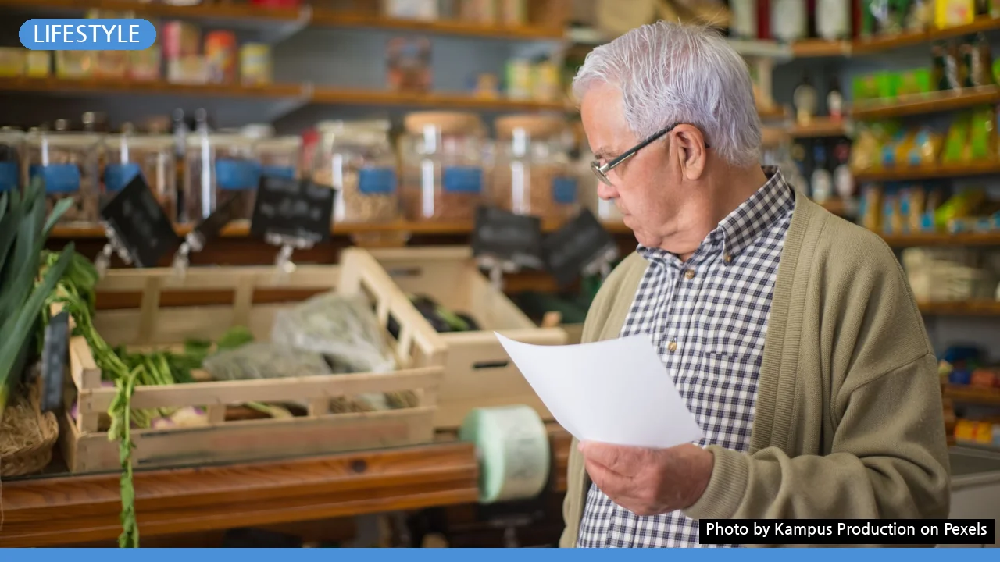

나에게 딱 맞는 장보기 계획 고르는 법: 유형별 장단점 완벽 비교
사진: Kampus Production / Pexels (무료 이미지, 출처 표기)
알뜰한 장보기를 위한 첫걸음: 계획의 중요성
알뜰한 장보기를 위해 계획을 세우고 싶지만, 어떤 방법이 효율적인지 고민되시나요? 무작정 마트에 가면 충동구매로 예산을 초과하거나, 집에 있는 재료를 또 사는 경우가 흔합니다. 장보기 계획은 이러한 낭비를 막고, 필요한 물품을 현명하게 구매하여 가계 예산을 효과적으로 관리하는 데 필수적인 도구입니다.
잘 세운 장보기 계획은 불필요한 지출을 줄여줄 뿐 아니라, 식품 낭비를 방지하고 식단 관리에 도움을 주며, 장보는 시간까지 절약해줍니다. 지금부터 다양한 장보기 계획 유형을 비교하고 나에게 맞는 최적의 방법을 찾아보세요.
가장 흔한 장보기 계획 3가지 유형 비교
장보기 계획에는 여러 방법이 있지만, 크게 세 가지 유형으로 나눌 수 있습니다. 각 유형의 특징을 이해하고 자신에게 맞는 방식을 선택하는 것이 중요합니다. 아래 표에서 각 방법의 장단점을 자세히 비교해드립니다.
나에게 맞는 장보기 계획 선택 기준
어떤 장보기 계획이 가장 좋다고 단정하기는 어렵습니다. 개인의 라이프스타일과 목표에 따라 효과적인 방법이 달라지기 때문입니다. 다음 기준들을 고려하여 자신에게 맞는 계획을 선택해보세요.
- 시간 활용의 자유도: 요리나 계획에 많은 시간을 투자할 수 있다면 식단 기반형이 좋습니다. 바쁘다면 정액 예산형이나 재고 확인형이 효율적일 수 있습니다.
- 예산 절약 목표: 강력한 예산 통제가 필요하다면 정액 예산형을 최우선으로 고려하세요. 식단 기반형도 불필요한 지출을 줄이는 데 효과적입니다.
- 요리 습관 및 빈도: 평소 요리를 즐기고 다양한 식단을 선호한다면 식단 기반형이 흥미를 더할 수 있습니다. 외식이 잦다면 재고 확인형이 낭비를 줄입니다.
- 가족 구성원 수: 1~2인 가구는 재고 확인형으로 유연하게 대처하기 좋고, 3인 이상 가구는 식단 기반형이나 정액 예산형으로 체계적인 관리가 유리할 수 있습니다.
성공적인 장보기 계획을 위한 추가 팁
선택한 장보기 계획의 효과를 극대화하려면 몇 가지 추가적인 노력이 필요합니다. 다음 팁들을 실천하여 더욱 알뜰하고 효율적인 장보기를 경험해보세요.
- 냉장고 및 팬트리 주기적 정리: 재고 확인형이 아니더라도, 주기적으로 보관된 식재료를 파악하고 정리하는 습관은 중복 구매와 식품 낭비를 막아줍니다.
- 할인 정보 및 전단지 활용: 마트 앱이나 온라인 전단지를 미리 확인하여 할인 품목을 계획에 반영하면 예산을 더욱 절약할 수 있습니다. 2026년 11월 기준, 대부분의 대형마트는 자체 앱을 통해 할인 정보를 제공하고 있습니다.
- 영수증 확인 및 피드백: 장을 보고 난 후 영수증을 확인하여 계획대로 구매했는지, 예상치 못한 지출은 없었는지 점검하세요. 다음 계획에 반영하여 점차 개선해나갈 수 있습니다.
- 온라인 장보기 서비스 활용: 무거운 물건을 직접 들고 오거나, 불필요한 물건에 눈길이 가는 것을 막는 데 온라인 장보기가 도움이 됩니다. 배송비와 최소 구매 금액 등을 고려하여 현명하게 이용하세요.
장보기 계획, 이런 점은 주의하세요
완벽해 보이는 장보기 계획도 몇 가지 주의할 점이 있습니다. 너무 엄격한 계획은 오히려 스트레스를 유발하고 지속하기 어렵게 만들 수 있습니다.
- 유연성 유지: 계획은 어디까지나 가이드라인입니다. 예상치 못한 상황이나 갑작스러운 식사 초대에 맞춰 유연하게 계획을 변경할 수 있는 마음가짐이 중요합니다.
- 충동적인 할인 유혹 경계: 계획에 없던 ‘1+1' 또는 '한정 세일' 등의 문구는 충동구매를 유발하기 쉽습니다. 정말 필요한 물건인지, 보관이 가능한지 등을 신중하게 판단하세요.
- 소비 기한(유통기한) 임박 상품 구매 주의: 파격 할인에 이끌려 소비 기한이 임박한 제품을 너무 많이 구매하는 것은 식품 낭비로 이어질 수 있습니다. 소비 가능한 양만큼만 구매하는 것이 현명합니다.
어떤 계획이든 지속 가능한 것이 가장 중요합니다. 자신에게 맞는 방법을 찾아 꾸준히 실천한다면, 알뜰하고 풍요로운 식탁을 만들 수 있을 것입니다.
🔗 이 글도 함께 보면 좋아요: 나에게 딱 맞는 스킨케어 루틴, 3가지 유형 완벽 비교
관련 추천 상품
장보기 리스트, 식단 계획표, 냉장고 정리함 관련 인기 상품 보러가기
이 포스팅은 쿠팡 파트너스 활동의 일환으로, 이에 따른 일정액의 수수료를 제공받습니다.